Врачи «Гармонии Улыбки»: 14 специалистов под одной крышей
Челюстно-лицевой хирург, имплантологи, ортопеды, ортодонты, терапевты, гигиенист и детский стоматолог — все направления в одной клинике на пр. Юрия Гагарина, 18к1. Сложные случаи ведём консилиумом, а не отправляем «поискать специалиста в другом месте».
У каждого врача — своя страница: образование, опыт, подход и отзывы пациентов. Выбирайте и записывайтесь — или позвоните, и куратор подберёт врача под вашу задачу: +7 (812) 660-80-88.
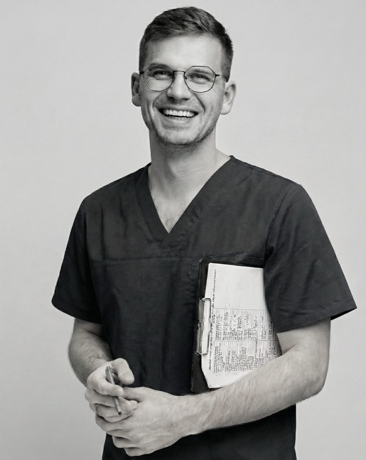
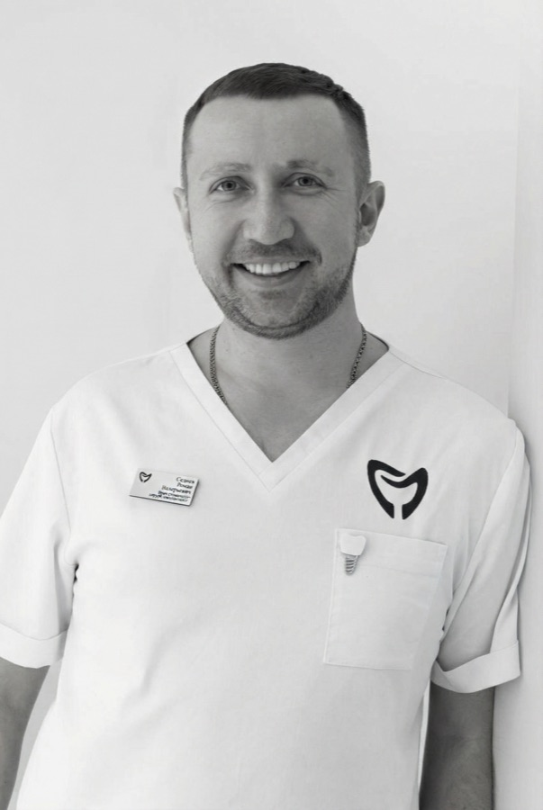
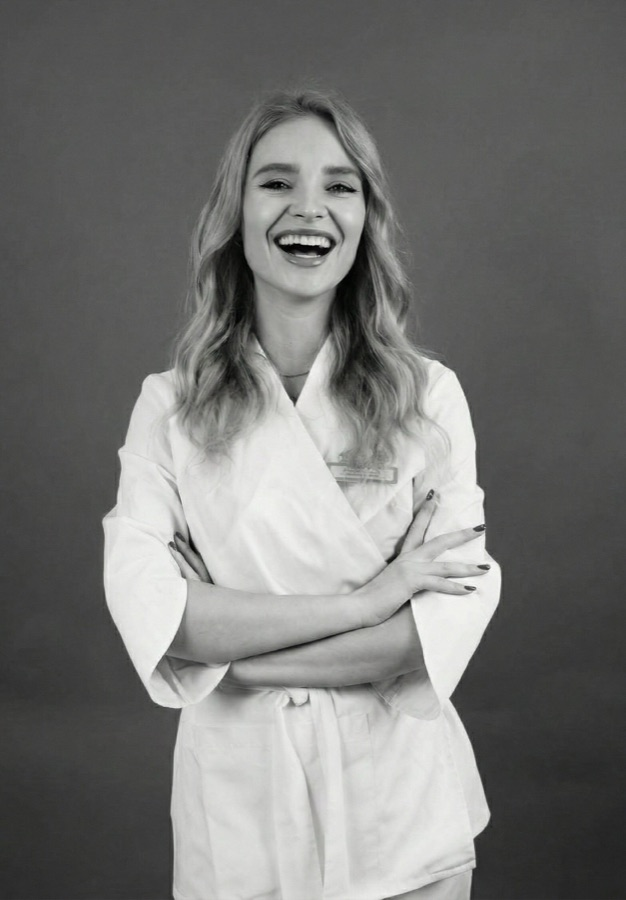
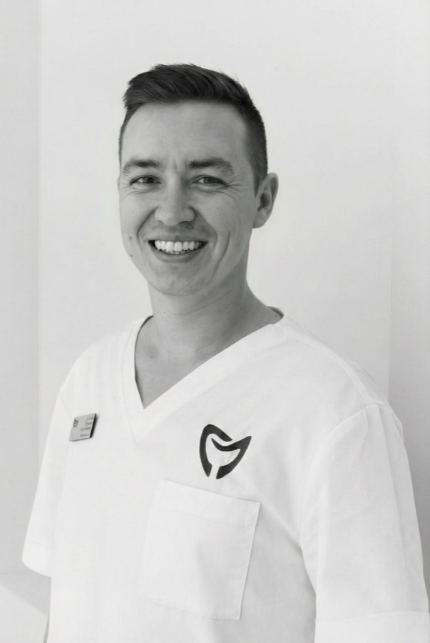
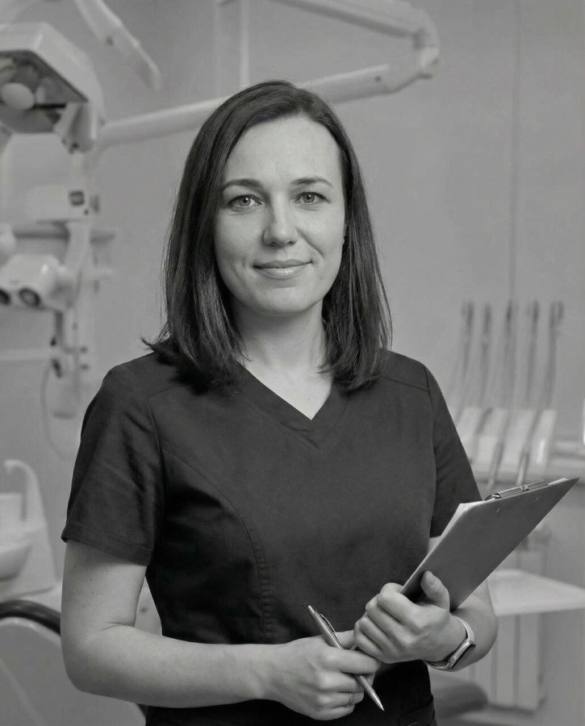
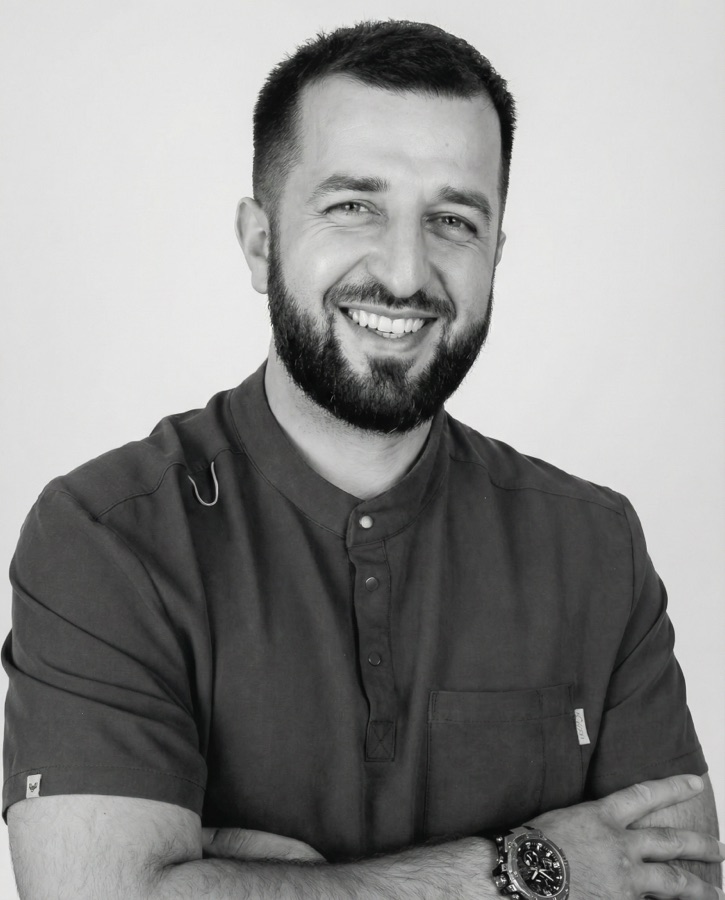
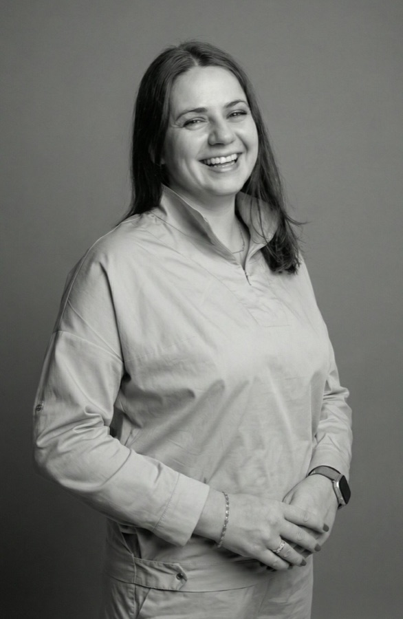
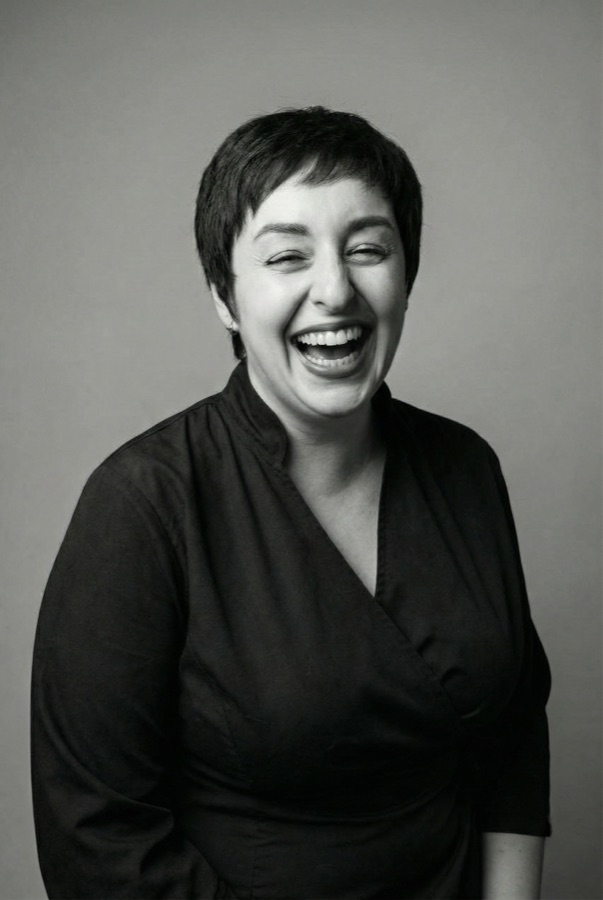
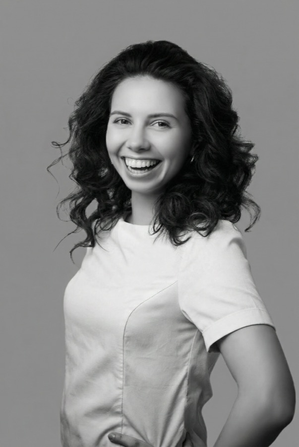
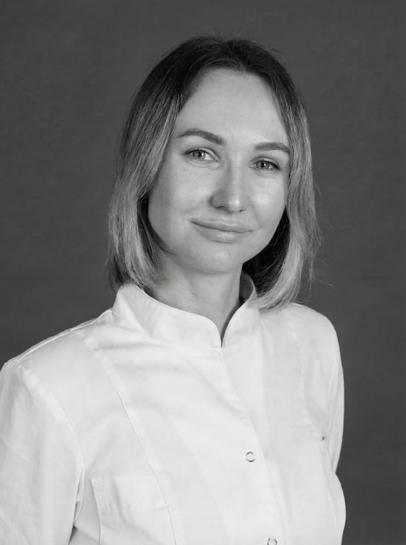
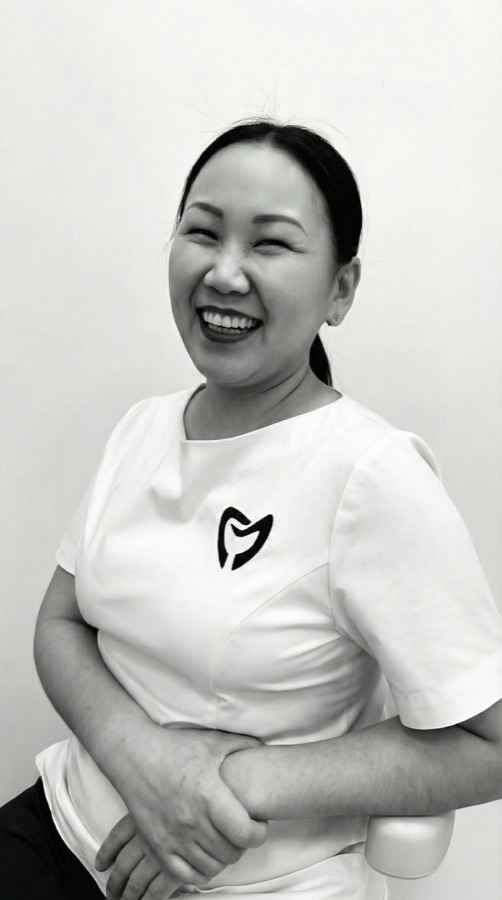
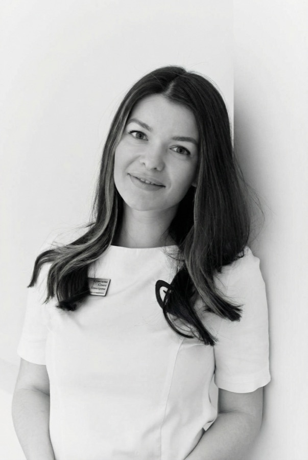
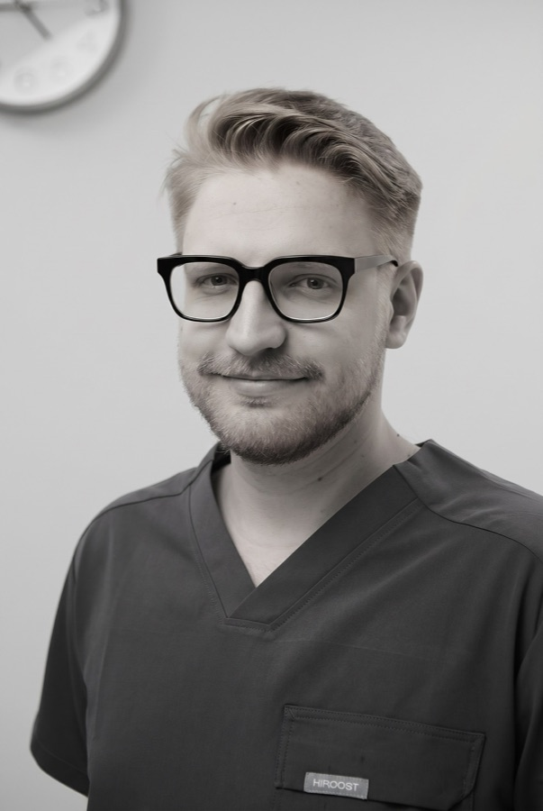
Один принцип на всю команду: сначала сохранить зуб
С 2016 года клиника работает с приоритетом сохранения натуральных зубов: прежде чем предлагать удаление или имплант, врач разбирает, можно ли зуб вылечить и восстановить. Этот принцип общий для всех 14 специалистов — от гигиениста до челюстно-лицевого хирурга.
Сложные случаи — ортогнатика, большие реконструкции, лечение во сне — ведём командой: хирург, ортопед, ортодонт и анестезиолог планируют лечение вместе, в собственной операционной клиники.
Не знаете, к какому врачу записаться?
Расскажите, что беспокоит, — куратор подберёт профильного специалиста и удобное время. Осмотр, бесплатное КТ и план лечения с ценой в договоре.
+7 (812) 660-80-88